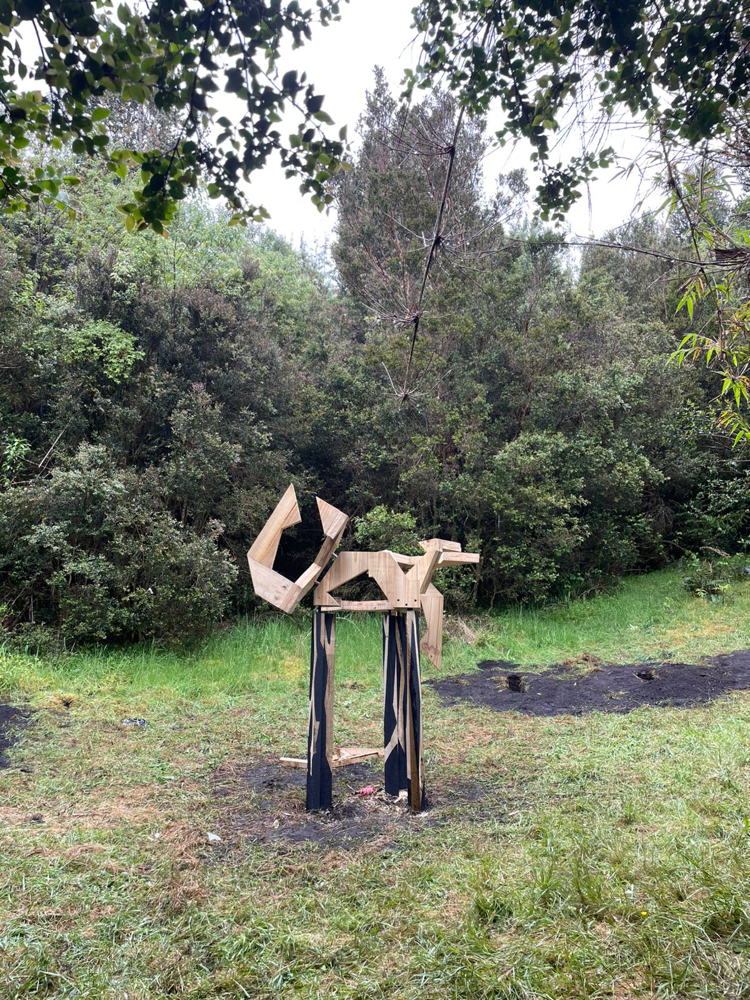

Travesía Cochamó

Realizada en 2025 en Cochamó, Región de Los Lagos, la travesía reunió distintos talleres de la Escuela de Arquitectura y Diseño. En ella se desarrolló la obra Escultura Agua Envuelta, como parte del trabajo realizado durante el viaje.
Ver en Casiopea